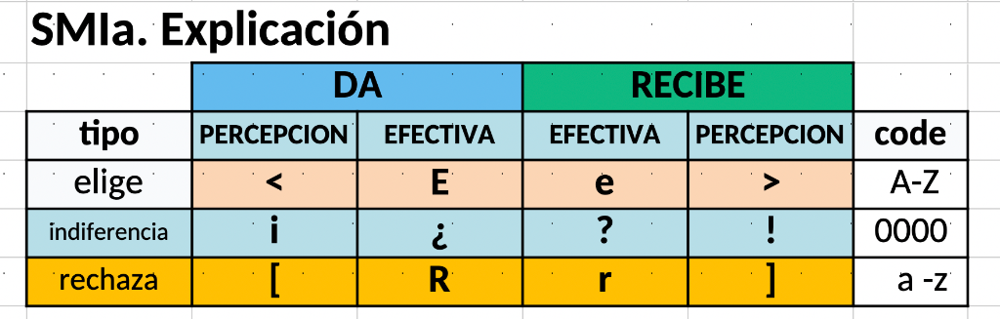
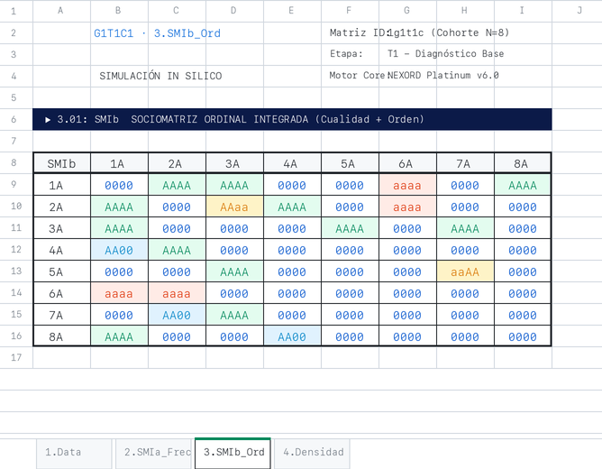

Fundamentos ontológicos del átomo vincular, transcripción canónica del tetragrama relacional y leyes de la socio-termodinámica grupal.
2a
El Vínculo: [Dar+Recibir]VÍNCULO
Núcleo indisociable de la realidad del grupo. La díada relacional como átomo sociométrico: dar, recibir, metapercepciones y reciprocidad.
➔
2b
SMIa: Sociomatriz IntegradaSMIa
Matrices oficiales en Excel: sintagmas figurativos inmediatos (<Ee>, ¡¿?!, [Rr]), Tetragrama y espacio finito de 255 indicadores.
➔
2c
SMIb(n, n): Sociomatriz Completa EstándarSMIb
Codificación conjunta del tetragrama y orden preferencial: base fundamental de la arquitectura matemática de NEXORD.
➔
2d
Densidad BDR/SDR y EntropíaDENSIDAD
Modelado físico de la cohesión grupal: energía vincular, orden de Boltzmann y balance termodinámico.
➔
2e
Espacio 9×9 Q81 y CuencasQ81
Topología completa de los 81 estados vinculares y cuencas gravitatorias del sistema.
➔
2A · EL VÍNCULO: [DAR + RECIBIR]
NÚCLEO INDISOCIABLE DE LA REALIDAD RELACIONAL DEL GRUPO · CONTINUO SIMBIÓTICO
⟨ E | e ⟩
Atracción & Elección Mutua
Resonancia afectiva positiva. El emisor otorga preferencia activa y el partner responde con acogida recíproca, generando cohesión y sinergia vincular.
Fuerza Centrípeta (+)
¡¿ | ?!
Nivel del Mar (Neutralidad)
Línea de flotación base (±0.00). Ausencia de afecto positivo o fricción activa. El espacio de reserva donde germinan futuras interacciones.
Equilibrio Barométrico (±0)
[ R | r ]
Repulsión & Tensión Centrífuga
Fricción relacional y rechazo. Disipa energía térmica y genera distancia protectora, polarización o clivaje intra-grupal si no se canaliza.
Fuerza Centrífuga (−)
DIMENSIÓN FÁCTICA
La ACCIÓN Efectiva (DA / RC)
Lo que los sujetos realizan fácticamente: DA (A2) es la preferencia emitida por el sujeto hacia el otro, y RC (A3) es la preferencia que el partner devuelve efectivamente al sujeto.
DIMENSIÓN COGNITIVA
Las EXPECTATIVAS (p_DA / p_RC)
La metapercepción subjetiva: p_DA (A1) es la expectativa que el emisor tiene de lo que hará el partner, y p_RC (A4) es la expectativa que el partner tiene de lo que hará el emisor.
💡 Nota: En el átomo vincular, la acción y la expectativa son inseparables: dar y recibir forman un acoplamiento continuo. El análisis simultáneo de las 4 posiciones del Tetragrama permite diagnosticar con certeza matemática si un vínculo es armónico, asimétrico o genera fricción latente.
2B · SMIA: SOCIOMATRIZ INTEGRADA
INTEGRACIÓN ESTRUCTURAL DE ELECCIONES Y RECHAZOS EN FORMATO MATRICIAL
1. Matriz Explicativa Oficial Excel
Sintagmas Diádicos

ESTRUCTURA CANÓNICA DEL TETRAGRAMA
pDADA|RCpRC
• Percepciones a los lados (pDA y pRC): En los flancos exteriores se inscriben las expectativas cognitivas de cada actor respecto al otro:
pDA (A1) es lo que el emisor espera del partner, y
pRC (A4) es lo que el partner espera del emisor. Codifican apertura y cierre:
< > (elección),
¡ ! (neutralidad) o
[ ] (rechazo).
• Preferencias efectivas en el centro contrapuestas: En el núcleo se confronta el intercambio fáctico cara a cara:
DA (Mayúscula) (A2) es la preferencia emitida por i hacia j (DA(i, j): Elección, ¿Neutro, Rechazo), frente a
DA (Minúscula) / RC (A3), que es la preferencia efectiva que el partner devuelve al emisor (DA(j, i): elección, ?neutro, rechazo).
Espacio de 255 Indicadores: La variación combinatoria de los 12 símbolos relacionales elementales genera con exactitud matemática el espacio finito de 255 indicadores sociométricos básicos de la red.
2. Matriz SMIa Oficial Excel · Grupo N=8
2.01: SMIa Integrada
8×8 = 64 Díadas
💡 Matriz centrada con sintagmas relacionales directos en negrita sobre hoja Excel. Clic para ampliar.Alta Visibilidad
💡 Nota: La SMIa (Sociomatriz Relacional Integrada) transforma el recuento clásico de votos en una radiografía vincular instantánea: aislando los símbolos cualitativos puros del Tetragrama (<Ee>, ¡¿?!, [Rr]), revela de un solo vistazo el clima diádico completo, los polos de atracción mutua y los focos de fricción sin distorsión de escala. Asimismo, la variación combinatoria de los 12 símbolos relacionales elementales genera con precisión matemática el espacio finito de los 255 indicadores sociométricos básicos de la plataforma.
2C · SMIB(N, N): SOCIOMATRIZ COMPLETA ESTÁNDAR
TETRAGRAMA RELACIONAL CANÓNICO [p_DA, DA, RECIBE, p_RECIBE] · CÉLULA MADRE
CODIFICACIÓN CONJUNTA: TETRAGRAMA & ORDEN
[ A1 A2 | A3 A4 ]
• Vector Tetragrama (4 Posiciones Canónicas): Cada celda diádica (i, j) integra en 4 caracteres los dos planos inseparables del vínculo:
flancos cognitivos externos A1 (p_DA) y A4 (p_RC) para las expectativas mutuas, y
núcleo fáctico interno A2 (DA) y A3 (RECIBE) para las preferencias efectivas intercambiadas.
• Orden Preferencial Continuo (Escala Tripartita Canónica):
En cada posición se modula la intensidad mediante el rango ordinal exacto sin pérdida de información:
Ejemplo diádico sintético: En una celda como [ 0BB0 ], los sujetos no presumen expectativa activa previa (0 en A1 y A4), pero ambos se otorgan recíprocamente su segunda preferencia de elección (B en A2 y A3).
🏛️ BASE FUNDAMENTAL DE LA ARQUITECTURA MATEMÁTICA
Célula Madre NEXORD
La SMIb(n, n) es la célula madre de todo el ecosistema NEXORD. Al capturar la interacción microscópica en 4 bytes por celda con resolución ordinal continua, de ella emanan con rigor algebraico:
• Transcripción SMIa & Q81:
Mapeo a los 81 arquetipos cualitativos y 255 indicadores básicos.
• Tensores BDR / SDR:
Cálculo exacto de Densidad Bruta y Densidad Relativa grupal.
• Espectro Laplaciano & Fiedler:
Conectividad algebraica λ₂ y balance estructural de Heider λ₁.
• Geometría Grassmanniana:
Subespacios Gr(k, N), ángulos canónicos de Jordan y geodesias.
TABLA OFICIAL EXCEL · SMIb(n, n)
3.01: SMIb_Ord (Grupo N=8)
8×8 = 64 Díadas Ordinales

💡 Hoja oficial Excel con codificación conjunta [A1 A2 A3 A4] en 4 bytes. Clic para ampliar.Estándar BSOC
💡 Nota: La matriz SMIb(n, n) es el cimiento matricial irreducible sobre el que descansa toda la matemática de NEXORD. A diferencia de las matrices sociométricas clásicas binarias (0/1) que destruyen el gradiente de intensidad y disocian la acción de la expectativa, la SMIb preserva simultáneamente la dirección fáctica (DA / RC), la anticipación cognitiva (pDA / pRC) y la jerarquía ordinal continua (Mayúsculas / 0 / Minúsculas), garantizando fidelidad factual absoluta en cada nivel analítico.
2D · DENSIDAD RELACIONAL:
DENSIDAD BRUTA (BDR) Y RELATIVA (SDR) · TERMODINÁMICA VINCULAR
1. EL CÁLCULO DE LA DENSIDAD RELACIONAL
CONTINUO
• Transforma el recuento plano en un campo continuo de potencial energético.
💡 Nota: La arquitectura de Densidad Relacional formaliza el tránsito desde las micro-preferencias del Tetragrama hasta las derivadas termodinámicas del grupo: las densidades D1..D4 desglosan la energía vincular; SDA, SRC y SDR cuantifican la valencia afectiva neta continua; BDA, BRC y BDR miden la masa interactiva bruta desplegada; y las Inercias Diferenciales (Dif_r, Dif_a, Dif_i) diagnostican con precisión matemática las asimetrías de reciprocidad, los desbalances de carga y el desgaste térmico interno (fricción o jamming) de la red.
2E · RETÍCULA CANÓNICA Q81(9, 9) Y CENTROIDES:
ESPACIO DE ESTADOS DIÁDICOS Y CUENCAS GRAVITATORIAS
• Plano Fáctico (N × N): La anécdota biográfica particular, contingente y local. Si cambian los individuos, la matriz se extingue.
• Plano Formal (9 × 9): La categoría sociométrica universal. Desvincula la biografía particular para proyectar la red en el espacio de 81 figuras relacionales Q81.
• Marco Invariante: Permite comparar colectivos de cualquier escala (N=5 frente a N=50) bajo leyes socio-físicas universales.
2. CONCENTRACIÓN DE CENTROIDES
MULTI-ESCALA
Valencia Molar Triádica:
• (+) Elección (E/e): Masa centrípeta de atracción mutua e integración grupal.
• (0) Indiferencia (¿/?): Cota barométrica neutra y masa en reposo ambiental.
💡 Nota: Al transitar de las tablas cuadradas interpersonales (N, N) a la tabla cuadrada de figuras sociométricas (9, 9), VISORD emancipa el análisis del dato puramente biográfico o contingente: la matriz (9, 9) desvincula el dato de la biografía particular para proyectarlo en el espacio universal de las 81 figuras relacionales, posibilitando una auténtica deducción científica. La posterior concentración de centroides en los niveles MACRO (3), MESO (6) y MICRO (9) permite modular la resolución diagnóstica como un telescopio multiescala: desde el clima termodinámico global hasta la microfísica quirúrgica de cada díada.